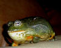
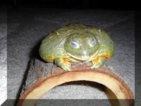

Click on Webster's picture and hear him talk to
you.
Click on Webster's picture and hear him talk to
you."This is a great big frog! I don't want to share a tank with them"! (Millie)
Click on Webster's picture and hear him talk to
you.
This is Webster, the largest frog in the bunch! Big, green, mean, eating machine!
Webster is a Pyxicephalus Adspersus, his scientific name, otherwise known as an African burrowing bullfrog. (Comes from Africa) Burrowing, because they like to dig into the dirt/substrate. Giving him a sandbox to burrow in will delight your Pyxie. And not only that, it's good for them because it's good exercise and keeps those powerful legs strong. Other wise, Webster lives in a 20 gallon tank with his big house, a big bowl and washable carpeting. These frogs will probably slow down on their eating in the winter months when they are adults. The babies however, will continue to gobble up anything that moves, including room mates, so be cautious about housing them together.
 This is Cornelia (Corny), Webster's girlfriend. She is about half his size. Corny has the same basic setup as Webster, just smaller. Her picture is small, but you can click on it and make it larger to see Corny better.
Pyxies can grow quite large, 7 to 8 inches in length or so. Webster weighs about 2 pounds or more and came home the size of a silver dollar. He is now about 8 inches long while Corny is about 5 inches long. So you can see, these are no pixies! Males are larger than the females which is one way to tell them apart. A Pyxie father will protect his babies, unique for frogs. When you bring a baby Pyxie home, he may be hyper and shy wanting only to burrow and hide. However, once they settle in after a few days or so, they don't mind being out and about. The babies will snap at anything that moves and are always hungry. These frogs eat mice as well as crickets, worms and anything else they can catch. As the Pyxie grows, he will need a bigger and bigger tank and bowl to accommodate his rapidly increasing size.

Corny asleep, but enjoying her nap on the top of her "house".